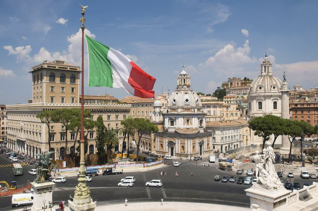
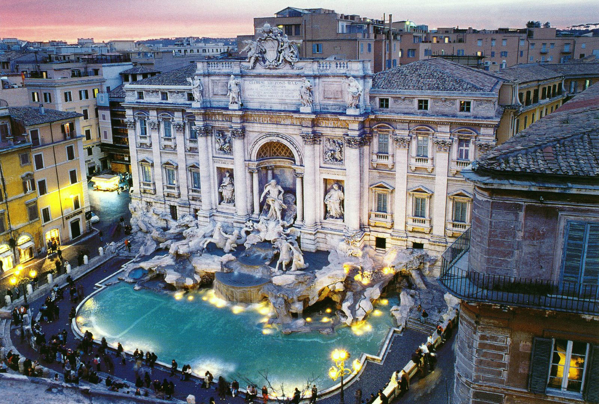

Страны Европы |
|---|
ИталияИталия - официальное название — Италья́нская Респу́блика (итал. Repubblica Italiana)) — государство в Южной Европе, в центре Средиземноморья. Входит в Евросоюз и НАТО с момента их создания, является третьей по величине экономикой еврозоны. Граничит с Францией на северо-западе (протяжённость границы — 488 км), Швейцарией (740 км) и Австрией (430 км) — на севере, Словенией — на северо-востоке (232 км). Также имеет внутренние границы с Ватиканом (3,2 км) и Сан-Марино (39 км). Занимает Апеннинский полуостров, крайний северо-запад Балканского полуострова, Паданскую равнину, южные склоны Альп, острова Сицилия, Сардиния и ряд мелких островов.На территории Италии находится 53 памятника Всемирного наследия ЮНЕСКО — больше, чем в какой-либо другой стране мира. Достопримечательности страныФонтан ТревиИстинной жемчужиной среди сотен источников в Риме принято считать фонтан ди Треви (Fontana di Trevi). Масштабная и зрелищная достопримечательность скорее напоминает сцену из античной пьесы, выполненную в камне, нежели источник чистой воды. Удачное расположение и невероятная красота фонтана ежедневно притягивает к нему сотни посетителей столицы Италии. |